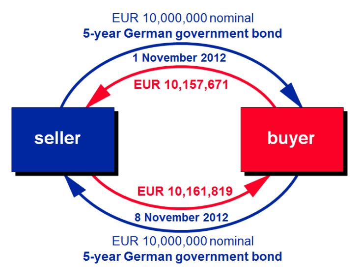
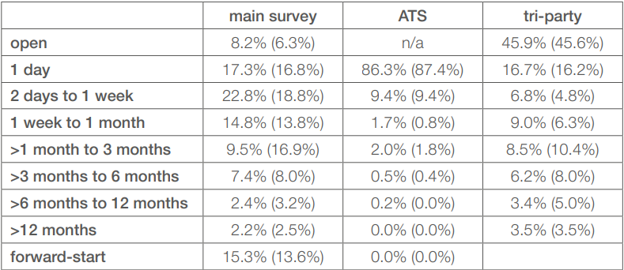

Repurchase Agreements
Basic Idea
Repurchase Agreements (repos) can be viewed as a collateralized loan. Generally, the borrower (in repo terms called seller) agrees to sell an asset to the lender (in repo terms called buyer) for a specific amount of cash. The seller also agrees to buy the sold asset back at expiry of the contract for a larger amount of cash. The price for which the asset is sold is called the purchase price, while the price at which the asset is bought back is called repurchase price. Effectively, the seller borrowed collateralized cash from the buyer. The interest rate (repo rate) paid for the borrowed cash is implicit in the repurchase price and is quoted as a percentage per annum rate.
From the perspective of the buyer, the transaction described above is called a reverse repo.
The following image ([1]) illustrates the basic life cycle of a (reverse) repo transaction.

The Repo Market
Economic Functions
The repo market plays a key role in facilitating the flow of cash and securities in the financial system. Additionally, repos and reverse repos are often carried out by central banks in order to temporarily provide liquidity to (or remove liquidity from) the financial system to support implementation of monetary policy and to promote financial stability.
A few economic functions of the repo market are ([1,2]):
- Providing a low-risk option for cash investment & an efficient source of short term funding:Due to the capacity of high-quality liquid assets (HQLAs) collateralised (reverse) repos to lower credit and liquidity risk, repos are used by different market participants such as money market funds, banks or other financial institutions as secure and liquid investment. Institutional inverstors also use repo contracts to meet temporary liquidity requirements without having to liquidate strategic long-term investments.
- Facilitating central bank operations:As shortly mentioned at the begining of this section, repos are a widely-used instrument for central bank open market operations. Due to the collateralization, the central banks credit risk is reduced. The repo market enables central banks to implement monetary policies more efficiently under normal market conditions.
- Financing leverage investors and covering short positions:Institutional investors, like hedge funds, borrow cash via the repo market to fund leveraged investment strategies and also borrow securities which allow them to cover short positions. These funds play an important role in feeding market liquidity and price efficiency of underlying cash markets through trading and exploitation of pricing discrepancies (arbitrage).
The Size of the European Repo Market
The International Capital Market Accociation (ICMA) conducted an European repo market surveys in June of 2022 [3]. In this survey the ICMA asked financial institutions operating in Europe for the value of the cash side of (reverse) repos that were still outstanding at close of business on June 8th 2022. According to the ICMA survey, the total value of the repo contracts outstanding on the books of the 56 participated institutions was at 9,680 Billion EUR. The ICMA conducted prior a similar survey with 59 participants one year earlier, where the total value of outstanding repo transactions was at 8,726 Billion EUR [4].
Typical Terms for Repos
The market survey in [3] also compared the different maturities for repos between the financial institutions participated in the survey (main survey), automatic repo trading systems (ATS), and tri-party agents (more on that later).

Different Types of Collateral
General Collateral
General collateral is a set or basekt of securities which trade in the repo market at the same or a very similar repo rate (GC repo rate). This means that GC securities can be substituted for one another. Hence, the buyer in a GC repo is indifferent to which security is given as collateral. Due to the fact that securities can be substituted for one another, the driver of the GC repo rate is not the supply and demand of particular issues of securities, but of cash. Furthermore, a buyer in a repo may grant the seller permission to substitute some or all collateral during the term of the transaction [5]. General collateral repos are cash-driven repos as the underlying collateral plays a subordinate role. Cash-driven repos are primarily used for funding [1,6].
Special Collateral
While in GC repos the specific asset demanded as collateral is not important, as long as it comes from a specific GC basket, the specification of a certain asset privoded as collateral in SC repos is very much so. A special is an issue of securities that is subject to exceptional demand in the repo and cash markets compared to similar issues. A security is said to be on special (a special collateral) if the repo rate for that collateral is distinctly lower than the GC repo rate. The demand for some specials can become so large, that the special repo rate becomes negative [1,7]. The repo spread, which is the difference between the GC repo rate and the SC repo rate, can be seen as an implicit borrowing fee for the security on special. Thus, the lower repo rate for specials can be understood as the GC repo rate paid for the cash reduced by the borrowing fee for the security in high demand. Since the main intention of special repos is the ‘borrowing’ of sought after securities, these repos are security-driven repos. One of the most common reasons for an security to go special is when that security becomes the cheapest-to-deliver in the futures market.
Risks
Generally, there are two sources of risk in repos, collateral and counterparty risk. The primary driver for counterparty risk is the credit risk, meaning the counterpartys inability to repay a loan or meet a contractual obligation. Counterparties with a higher credit risk also pay higher repo rates as compensation for the risk. The collateral risk consists of the liquidity risk, the volatility of the collateral’s market price and the collateral’s credit risk, which influence the quality of the collateral. The liqudity risk plays an important role in the event of the sellers default, since collateral taken from a risky counterparty is more likely to be liquidated to mitigate the buyers (cash lenders) losses, than collateral take from a non risky counterparty [1]. Additionally, repos with a longer time to maturity also have a higher repo rate. Further descriptions of best practices in cases of counterparty default will be provided in the next section. If the credit risk of the assets provided as collateral has a certain correlation to the credit risk of the party providing this asset, the collateral also has a wrong-way risk. In order to account for the collateral risk in repo transactions, so called haircuts or initial margins are included. The inital margin/ haircut is a risk adjustment of the current market price of the collateral [1,8-10]. In other words, haircuts/ initial marigns are an adjustment to the quoted market value of a collateral in order to account for the unexpected loss that the buyer may face due to the difficulty of selling the security in response to a seller’s default. Thus, using a haircut \(h\) or an initial margin \(IM\), the purchase and repurchase price for a repo with repo rate \(r\) and maturity in years \(T\) can be calculated as follows:
Using a haircut
\begin{align*} P_\text{purchase} &= P_\text{market}\cdot(1-\frac{h}{100})\\ P_\text{repurchase} &= P_\text{purchase}\cdot\left(1+r\cdot T\right)\\ h &= \left(\frac{P_\text{market}-P_\text{purchase}}{P_\text{market}}\right)\cdot 100 \end{align*}
Thus, the haircut is expressed as the percentage difference between the market value of the collateral and the pruchase price of the repo.
Using an initial margin
\begin{align*} P_\text{purchase} &= \frac{P_\text{market}\cdot100}{IM}\\ P_\text{repurchase} &= P_\text{purchase}\cdot\left(1+r\cdot T\right)\\ IM &= \frac{P_\text{market}}{P_\text{purchase}}\cdot 100 \end{align*}
The initial margin is expressed as a relative to 100%. Thereby, an initial margin of 100% means no margin is applied. An initial margin of 102% is not equivalent to a haircut of 2%. The relationship between the haircut and the initial margin can be computed using the fact that both need to result in the same purchase price:
\begin{align*} P_\text{market}\cdot(1-\frac{h}{100}) &= \frac{P_\text{market}\cdot100}{IM}\\ 1-\frac{h}{100} &=\frac{100}{IM}\\ \frac{100}{1-\frac{h}{100}} &=IM \end{align*}
Thus, a haircut of 2% is equivalent to an initial margin of 102.041% [5,8,10-12]. The ICMA recommends that once the initial margin or haircut is agreed upon, the initial margin or haircut should be fixed for the full term of the repo [5].
It is quiet natural, that the market value of the collateral increases or decreases during the term of the repo. In cases where the market value decreases significantlly (more than the haircut accounts for) the buyer of the repo is exposed to the defaulty of the seller, since the buyer may not be able to recover the money ‘lend’ by selling the collateral. Hence, the lender will call for variation margin to rebalance cash and collateral.
The example above demonstrated a possible scenario, where the buyer of a repo is exposed to the default of the seller of a repo, once the market value of a collateral significantly decreases. In such cases the buyer will call for variational margin such that the exposure is the buyer is minimised. Additionally, both parties agree on a minimum exposure below which they will not call a margin for each other. The parties exposure is conducted daily [5,10,11].
Collateral - Coupons and Dividends
During the life of a repo, the buyer holds legal title to the collateral. This means that all payments produced by the security are paid by the issuer directly to the buyer. However, the seller of the collateral retains the risk on the collateral, as the seller has committed to buy the collateral back in the future for its original value plus repo interest. A key principle in the operation of repos is that only the seller should be exposed to the risks of the collateral. Hence, the seller will expect to receive the corresponding return. So, the buyer agrees to immediately pay compensatory amounts to the seller equivalent to any income payment received on the collateral (manufactured payments) [1,8,14].
Collateral - Voting Rights
Since the buyer holds legal title to the collateral, he/she is entitled to any benefits of ownership such as voting rights. The buyer can use this voting right to vote in accordance with the seller but the buyer is not obligated to do so. However, under the Equities Annex to the ICMA’s Global Master Repurchase Agreement (GMRA), the right to take decisions on corporate actions in the case of equity being used as collateral is the seller’s, provided that the seller gives the buyer requisite notice of the decision [1,14].
Different Types of Repos
Tri-party Repos
Tri-party repos are repos for which collateral selection, payments and deliveries, custody of collateral securities, collateral management and other operations during the life of the transaction are outsourced by the parties to a third-party agent. Such a tr-party agent can be a custodian bank, an international central securities depository or a national central securities depository. In Europe, the principle tri-party agents are Clearstream Bank Luxembourg, Euroclear Bank and JP Morgan. Once a transaction has been agreed directly between the parties (usually by phone or electronic messaging) both parties independently notify the tri-party agent. The agent will automatically select, from the securities account of the seller, sufficient collateral. The tri-party agent manages the regular revaluation of the collateral, variation margining, income payments on the collateral and the substitution of collateral [1,10,15].
Open Repos
In an open repo (also called on demand or open-ended repo) the transactions is agreed without a ficed maturity date. Thus, the repo can be terminated on any business day by either party, provided they give notice within an agreed period of time. It is common for the repo rate on an open repo rate to be changed up or down (re-rated) only at request of one of the parties and only with agreement of the other. Alternatively, the repo rate can be linked to a one-day interest rate index, which means that the repo rate would change automatically. These both approaches can be combined by quoting the repo rate as a floating interest rate plus/minus a spread, which either party can request to change [1,10,16]. Practitioners often use basis points (BP) to refer to interest rates or spreads. The relation of BP and percentage is the following: \(1BP=0.01\%\). Repo interest is accrued dailty without compounding. Accrued interest can be paid by either, paying it on the repurchase date (as usual in repos), on the re-rate date as a discrete interest payment or once a month also as a discrete interest payment.
Securities Lending
Securities lendings and repos have many similarities. In a securities lending transaction one part gives legal title to a security or a basket of securities to another party, in exchange for legal ownership of collateral. The seller in a repo is the lender in the securities lending and the buyer is called borrower. The borrower pays a fee to the lender for the usage of the loaned security. The collateral in securities lending can either be cash or other securities. Securities lending against cash look very similar to security driven repos. When the collateral is cash, the lender is obliged to reinvest the cash and rebate an agreed proportion of the reinvestment return back to the borrower. Hence, the the analogon to the repo rate in securities lending is the rebate rate [1]. Another way to view this is, that the lender who recevies the cash needs to pay certain interest on that cash, while simulatneously the borrower pays a borrowing fee for the borrowed security. The net value of those two cash flows is the rebate rate.